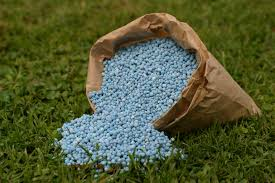
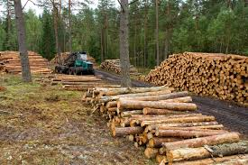
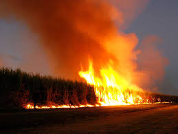
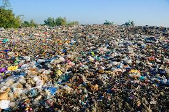
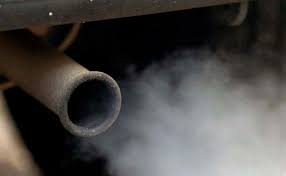
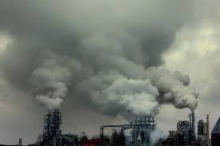
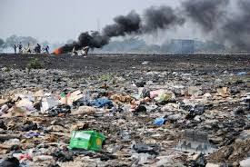

Da click para ver que es
Da click para ver informacion
Da click para ver las consecuencias
Da click para ver las ideas preventivas
Da click para ver los tipos de contaminacion
En el se muestra la contaminacion que hay en mi comunidad
Estas son fotos de contaminacion:






Estas son fotos de contaminacion:

Como puedo contribuir: